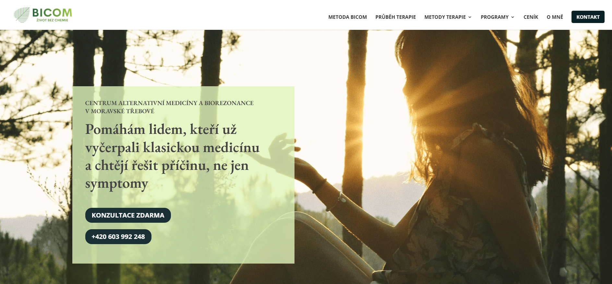
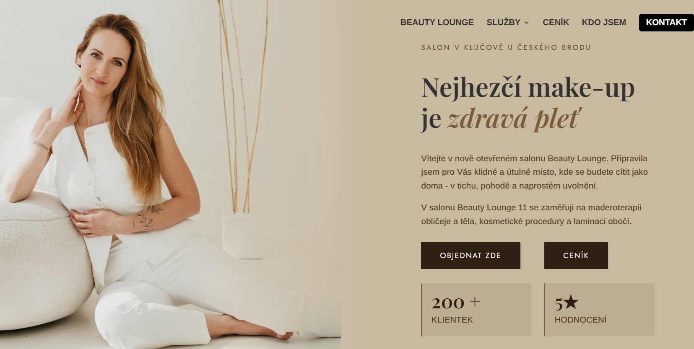
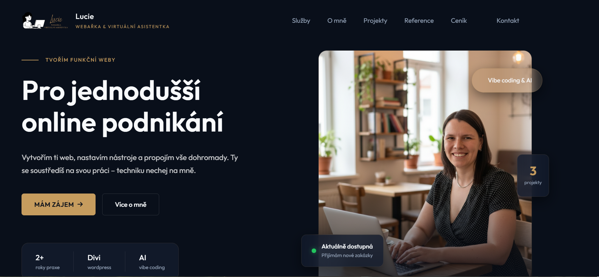
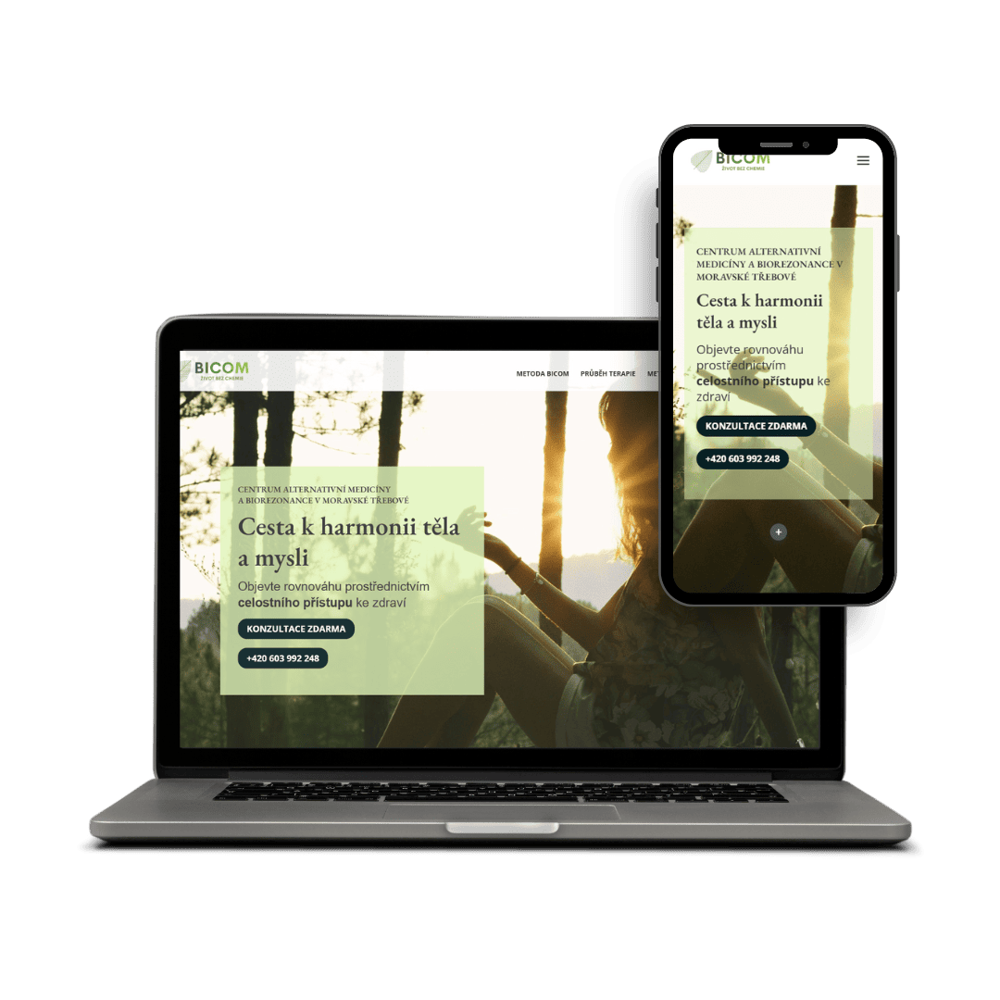
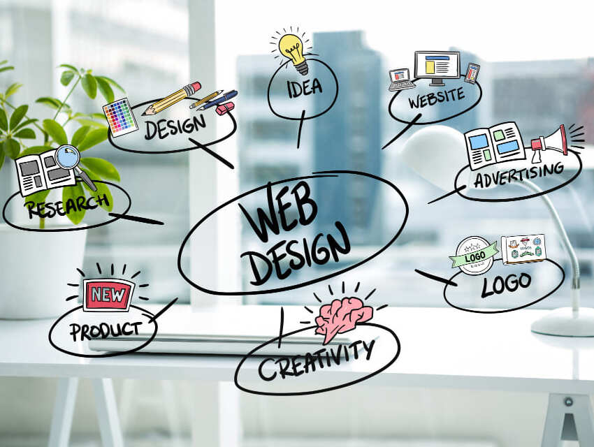

Pro jednodušší
online podnikání
Vytvořím Vám web, nastavím nástroje a propojím vše dohromady. Vy se soustředíte na svou práci – techniku nechte na mně.

Mějte své podnikání pod kontrolou
Tvorba webu v Divi
Postavím Vám web, který budete moct sama upravovat, přidávat obsah a postupně rozšiřovat – bez závislosti na webaři.
…chcete mít web ve svých rukou a plánujete ho dále rozvíjet.
Tvorba webu s AI
Chcete moderní web rychle a za dostupnější cenu – a nepotřebujete ho průběžně měnit. Web prostě musí existovat a vypadat dobře.
…potřebujete rychle funkční online prezentaci bez nutnosti ji průběžně upravovat.
Virtuální asistence
Máte web, ale technické věci Vás zdržují nebo Vám nejdou. Potřebujete někoho, kdo to vezme do ruky a vyřeší.
…nechcete řešit techniku a raději se věnujete své práci.

Žena, která miluje pořádek v chaosu
Mezi řádem a chaosem
"Nikdy jsem nebyla ten typ, co má všechno srovnané v dokonalých přihrádkách. Ale miluju,
když
věci dávají smysl a fungují."
Asi proto mě tak baví tvořit strukturu a přehlednost –
ať
už v životě, nebo v online světě.
V pozadí dění
Už od dětství jsem byla členkou dětského oddílu, kde jsem později působila i jako vedoucí. Dlouhá
léta jsem tam byla „pravou rukou" hlavního vedoucího.
Tam jsem zjistila, že miluju být tou, která
drží věci pohromadě, ale není vidět.
Od plánů k lidem
Vystudovala jsem ČVUT a 6 let pracovala jako projektantka dopravních staveb. Byla to precizní
práce,
plná technických detailů.
Časem jsem ale zjistila, že na stavbách trvá roky, než se něco pohne, a
já mám ráda, když vidím výsledek hned.
Cesta k rovnováze
Po přestěhování na vesnici jsem nechtěla znovu sedět celé dny v kanceláři. Přemýšlela jsem, jak
spojit technické schopnosti, chuť pomáhat a potřebu vidět smysl v práci.
Našla jsem směr, který
mi
sedl jako ulitý.
Nový začátek
Absolvovala jsem kurzy Virtuální asistentky, webařiny (Divi) a práce s AI. Zjistila jsem, že tvorba v online světě mě baví. Postupně jsem začala pracovat na reálných zakázkách – a tehdy jsem pochopila, že jsem na své cestě.
Projekty, na které jsem hrdá
Každý web má svůj příběh.

Bicom
bicom-zivotbezchemie.czČistý a přehledný web s duší. S klientkou i dále po spuštění doplňujeme další stránky a spouštíme rezervační systém
Zobrazit web
Beauty Lounge 11
Kosmetika & maderoterapie
Elegantní web pro kosmetický salon v Klučově u Českého Brodu.
Web brzy spustíme
Webelo
webelo.czVlastní prezentační web – příležitost vyzkoušet tvorbu s pomocí AI v praxi. Web je celý kódovaný, bez použití šablony.
Zobrazit webJak to vidí klienti?
"Od první chvíle jsem cítila, že Lucie přesně chápe, co chci – i když jsem to sama neuměla úplně přesně popsat."
Lucii jsem oslovila, protože jsem potřebovala nový web, který by mi opravdu seděl k tomu, co dělám. Společně jsme krok za krokem vytvořily web, který je jednoduchý, čistý, přehledný a hlavně – má duši. Moc si vážím Lucčiny trpělivosti, nápadů a toho, že se opravdu zajímala o to, kdo jsem a co dělám. Díky ní mám web, který mě krásně vystihuje.

Na kolik to přijde?
Konkrétní nabídku vždy sestavím na míru.

Tvorba webu v Divi
- Návrh struktury a obsahu
- WordPress & Divi
- Propojení s emailingem
- Základní SEO nastavení
- Video s návodem k obsluze
Tvorba webu s AI
- Návrh struktury a obsahu
- Tvorba s pomocí AI nástrojů
- Propojení s potřebnými nástroji
- Rychlejší realizace projektu

Virtuální asistence
- Úpravy existujících webů
- Přidávání obsahu (texty, fotky)
- Nastavení emailingu & nástrojů
- Google Analytics / Console
- Správa členských sekcí
- Rezervační systémy
Co vás nejčastěji zajímá?
Odpovědi na nejčastější dotazy ohledně tvorby webů a virtuální asistence.
Máte další otázku?Jak dlouho trvá tvorba webu?
Záleží na tom, jakou cestou půjdeme. Web v Divi bývá hotový do měsíce od chvíle, kdy dostanu všechny podklady. Web tvořený s pomocí AI zvládneme do dvou týdnů.
Co je zahrnuto v ceně webu?
Cenu vždy stanovíme individuálně po úvodní schůzce — záleží na tom, co všechno na webu chcete mít. V základu ale dostanete úvodní schůzku a návrh struktury webu, pomoc při tvorbě obsahu, designový návrh a jeho úpravy podle Vaší zpětné vazby, responzivní zobrazení na všech zařízeních, základní SEO, zabezpečení webu, doživotní licenci Divi, videonávod ke správě webu, stránku 404, náhled pro Facebook a pomoc se zajištěním hostingu a domény.
Základní cena platí pro web o rozsahu 1–4 stránek. Za příplatek lze doplnit další stránky webu, rezervační systém, cookies lištu, Google Analytics, emailing, napojení prodejních stránek, další jazykovou verzi nebo blog.
Jaký je rozdíl mezi webem v Divi a webem s AI?
Web v Divi je stavěný na WordPressu. Jde o vizuální editor, takže změny, které děláte, hned vidíte. Hodí se pro větší nebo rostoucí weby, kde budete chtít přidávat stránky, psát blog nebo web postupně rozšiřovat.
Web s AI je rychlejší a levnější — ideální pro menší weby, vizitky nebo jednoduché prezentace služeb, které nepotřebují časté změny.
Budu moci web po dokončení sama spravovat?
U webu v Divi určitě — natočím Vám vlastní videonávod přímo na Vašem webu, takže žádné cizí tutoriály a tápání. Přepisování textů a drobné úpravy zvládnete sama. Přidávání nových věcí už může být ošemetné — stává se, že po vlastních úpravách vypadá písmo jinak nebo se něco rozhodí na mobilu. Pokud si nebudete jistí, prostě napište — účtuji jen čas, který skutečně odpracuji, a máte jistotu, že vše běží jak má.
U webu s AI texty, obrázky i odkazy upravit zvládnete. Přidávání nových sekcí nebo stránek ale nechejte raději na mně.
Co všechno spadá pod virtuální asistenci?
Hlavně technické věci — nastavování nástrojů, propojování aplikací, technická podpora třeba při webinářích nebo úpravy webu v Divi. Ale tím to nekončí.
Pomůžu také s přípravou podkladů, prezentací nebo dokumentů, researchem — ať už hledáte informace nebo porovnáváte nástroje a dodavatele, správou e-mailu nebo kalendáře a využitím AI nástrojů ve Vašem podnikání.
Nejlepší je se ozvat a probereme, s čím Vám můžu pomoct.
Musím dodat vlastní texty a fotky?
Texty ano — nechávám je tak, jak mi je dodáte, případně opravím gramatické chyby. Fotky jsou samozřejmě nejlepší vlastní, ale pokud jich máte málo, vyberu z fotobanky.
Co když se mi web nebude líbit?
Web průběžně konzultujeme a připravuji návrhy, takže překvapení na konci by nemělo přijít. Zatím se mi se všemi klientkami podařilo shodnout a web společně dokončit. Kdyby nám ale nesedla spolupráce, lze ji ukončit dříve — zálohu po úvodní schůzce si ponechám a Vy můžete s hotovou strukturou, texty i fotkami oslovit někoho dalšího.
Mohu web později rozšířit nebo upravit?
Samozřejmě — a stává se to často. Hodí se vědět dopředu, jakým směrem se chcete ubírat, abychom vybrali tu správnou cestu hned na začátku.
Nabízíte i správu webu po spuštění?
Ano, u webu v Divi to přímo doporučuji — aktualizují se pluginy, dělají zálohy a kontroluje se, že vše běží jak má. Provádím správu 3× ročně.
U webu s AI správa není tak nutná, ale jednou za čas se vyplatí zkontrolovat, že vše funguje. Domluvíme se individuálně po spuštění.
Co když nejsem z Vašeho okolí?
Vzdálenost není překážka — v tom případě se domluvíme na online callu se sdílením obrazovky. Mám klientky z celé republiky a funguje to úplně stejně.
Co potřebuji zařídit před spuštěním webu?
Doménu i hosting zařídím za Vás — používám Webkitty, kde roční poplatky vyjdou přibližně na 1 500 Kč. Pokud už hosting máte, web na něj nahraji, případně zajistím migraci stávajícího webu.
Pojďme si promluvit
Bez závazků, bez složitostí.
Máte projekt, nápad nebo jen otázku? Napište mi – ozvu se co nejdříve.
Ing. Bc. Lucie Loučková
Napište mi zprávu
Kontaktní údaje slouží pouze pro zpracování vašich dotazů a případně k domluvě spolupráce a nebudou použity pro žádné další účely.